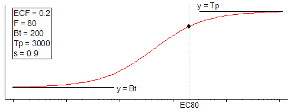

ECanything-FitFunc
EC50の代わりにEC80やEC90などをフィットします。

パラメータ数: 5
パラメータ名: ECF, F, Bt, Tp, s
意味: ECF = F%応答を示す濃度、F = 一定の応答率（%）、Bt = 下側漸近線、Tp = 上側漸近線、s = Hill勾配
下側境界: F>0
上側境界: F<100
logECF=log(ECF)
span=Tp-Bt
nlf_ECanything(x,ECF,F,Bt,Tp,s)
ECanything.fdf
Dose Response
^s}")
^{1/s}}")